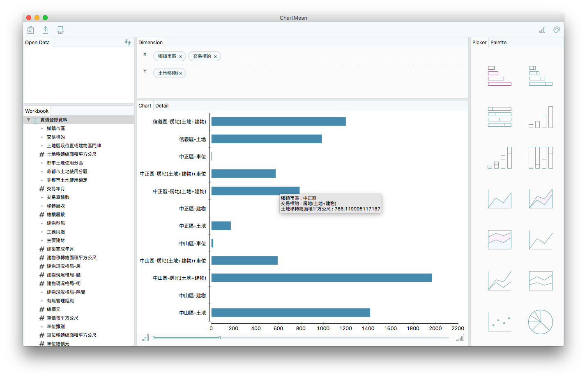
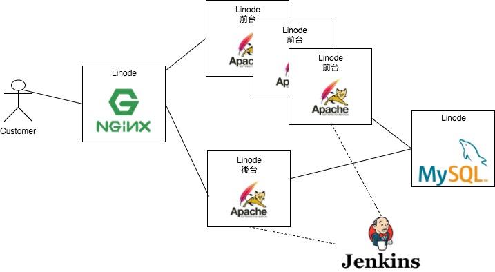
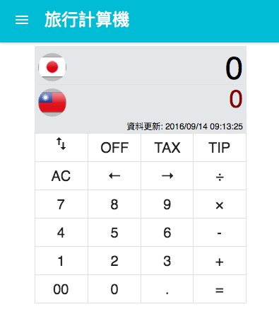
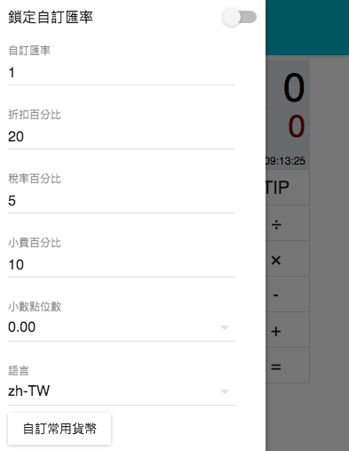
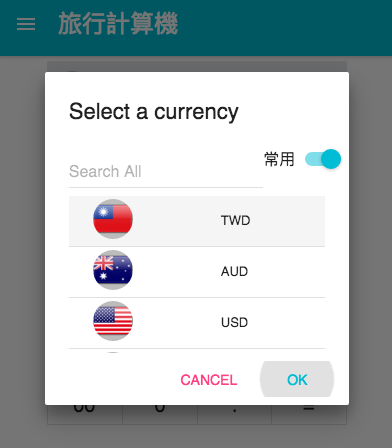
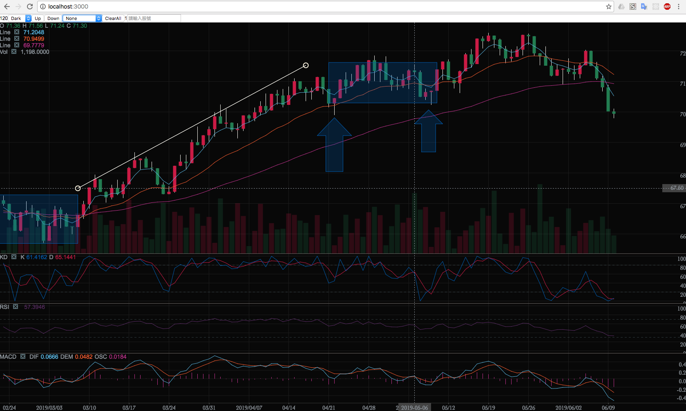
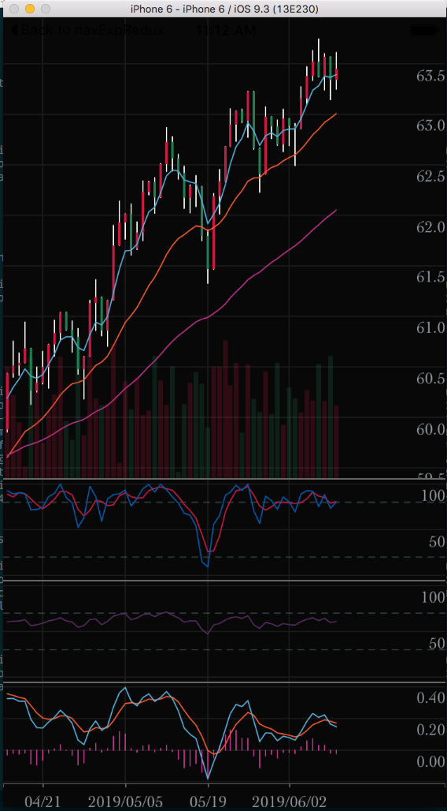

有任何合作機會，歡迎與我聯絡。
E-mail: t0963162429@gmail.com
手機: 0963162429
此文件用 Markdown 更新於 2017/12/24
摘要
- 自介
- 經歷
- 工作
- 交易策略 Script Transpiler
- 股票即時報價系統
- 資料視覺化
- 電商前後台系統
- 爬蟲與PDF OCR
- 零件倉儲系統
- 作品
- 計算機
- 股票技術分析 Web版
- 股票技術分析 React-Native 版
- front-end
- 專題論文
- 學士專題：Aho-Corasick and Wu-Manber on CUDA
- 碩士論文：Implementation of IP over DVB as an Internet Backbone
自介
我是林承毅，1988年屏東出生，南部就學與工作，就業期間也到台北三年。
習慣 Mac, Linux 平台，熟悉 C, Java, JS, Web 開發過 Linux Driver(碩士論文), Application Server(股票資料傳輸，進銷存內部系統), Socket(Netty)。工作接觸 Spring, Hibernate 後，覺得實用而開始深入 Spring 框架。
閒暇之餘，學習如何用 Python 分析股票和爬資料，使用 MariaDB, MongoDB 存交易資料, 對 numpy, pandas, matplotlib 有些基礎，
朝 Machine Learning 緩慢前進。
DevOps 部分，在 Linux 使用 Jenkins, Git, Docker, Redmine, Nexus 架設開發環境。 熟悉語言編譯, 套件管理系統,
例如：Makefile, Maven, npm, Webpack ... 等。
個性優缺點：
工作優缺點：
- 優點
- 主動學習，照工作需求優先學習，如果不缺技術也會規劃新東西學。
- 團隊合作方面，只要能解決問題就盡力配合，讓進度可以推進，不會有無謂的脾氣。
- 缺點
- 英文只擅長讀，其他聽說寫加強中。
- 工作幾乎只用到資料結構，需要加強演算法和數學。
- 表達與簡報能力需要加強。
經歷
工作
1. 交易策略 Script Transpiler (嘉實資訊)
實作TradeStation公司開發的程式交易語言(EasyLanguage)。負責建立 Syntax Tree, C++ Code Generation, C++ Runtime.
範例如下：
if the Close > High of 1 bar ago then Buy next bar at market;
For BarBackNo = 0 To 9
Begin
HighPriceSum = HighPriceSum + High[BarBackNo];
End;
相關技術：
2. 股票即時報價系統 (嘉實資訊)
從資料源接收即時成交資料，計算資料後，使用 Netty 透過 TCP, HTTP, WebSocket 送給 Client。
需求是 Response Time 200 millisecond。
工作內容：
- Netty 接現有 Server 資料， 解公司自訂的TCP封包。
- 用 Actor(akka) 計算股票資料。
- 提供上層同一個介面處理這三種 Client 連線(TCP, WebSocket, HTTP long polling 模擬雙向)。
- 連線加密，用 RSA 認證是否自己發行的 Client 的連線，登入成功之後採 AES 加密連線。
- 參與 Framework 開發, 類似 Web Framework, 用到以上提到的功能，為了 WEB 與 APP Client 開發的, 功能：
- Container 處理連線
- User Session 處理業務邏輯
- RPC Container與Container溝通，Container與Client溝通
- Model 自動比對只送出有更新的資料
伺服器維護監控：
- VisualVM 監控 CPU,MEM,GC, 看 stacktrace 抓 deadlock(netty throws DeadLockException)。
- jmap Dump JVM Heap 後用 Eclipse Memory Analyzer 觀察記憶體佔比例異常的區塊，再觀察程式碼查 Memory Leak。
- 搭配網頁（jetty) 觀察 server 資訊，ex: server本身連線數，user數，和其他台server的資訊。
相關技術：
3. 資料視覺化 (嘉實資訊)
協助客戶分析資料，導入資料後圖形化顯示（Pivot Table)。
相關技術：

4. 電商前後台系統（騰勢）
- 伺服器架構調整：調整伺服器架構，可因應活動新增機器（人為介入,非自動增減機器）。
- 測試環境：用 docker-compose 架測試環境，一個 git branch 對應一個測試環境，可以同時測試不同功能。
- 進銷存：協助採購規劃當週叫貨品項與成本預估，到貨核銷，庫存耗損記錄，貨物對賬核銷，報表匯出Excel。
- 會員點數制度：記錄客戶出貨次數計算等級與點數累積，點數兌換商品。
- 出貨排配系統：採強化學習方式，依照條件設定，排列適合每位客戶的水果組合。提供介面人為微調組合，接著輸出成貨運廠商需求格式Excel。

相關技術：
5. 爬蟲與PDF OCR (接案：順興工業)
從網站與PDF抓取船隻,船東資料以便行銷使用。
PDF 處理方式，先轉成灰階圖檔，辨識表格，切割成 Cell 再透過 tesseract-ocr 解讀文字。
相關技術：
6. 零件倉儲系統 (接案：順興工業)
商品庫存與倉儲。主要需求：
- 帳戶權限分級，限制存取功能。
- 商品與其文件，圖片管理。
- 庫存搜尋與檢視其倉儲位置變化。
相關技術：
部分 Demo：
作品
業餘時間開發小品。demo
1. 計算機
相關技術：
- ReactJS/Redux
- Material-UI



2. 股票技術分析 web版
demo
相關技術：

3. 股票技術分析 React-Native 版
相關技術：

4. front-end
前端排版動畫練習
專題論文
1. 學士專題
使用 CUDA 實作 Aho-Corasick, Wu-Manber 兩種字串搜尋演算法，並比較其優缺點。
2. 碩士論文
以DVB為網際網路骨幹實作 (Implementation of IP over DVB as an Internet Backbone)
實作 Linux netdevice driver 控制 it950x(DVB裝置) 接收發送 IP 封包，可以執行 IP Layer 之上的應用，例如：TCP, UDP。
有任何合作機會，歡迎與我聯絡。
E-mail: t0963162429@gmail.com
手機: 0963162429
此文件用 Markdown 更新於 2017/12/24